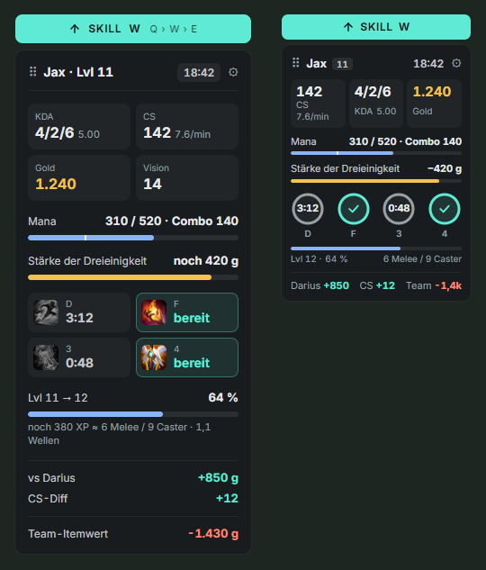
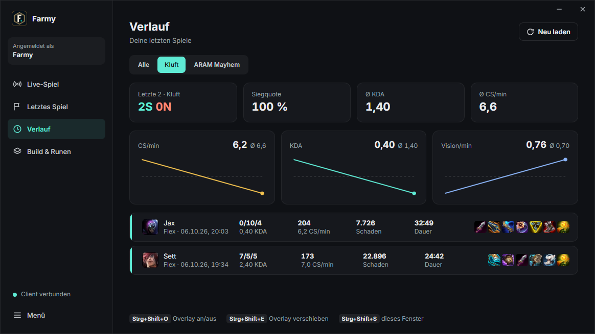
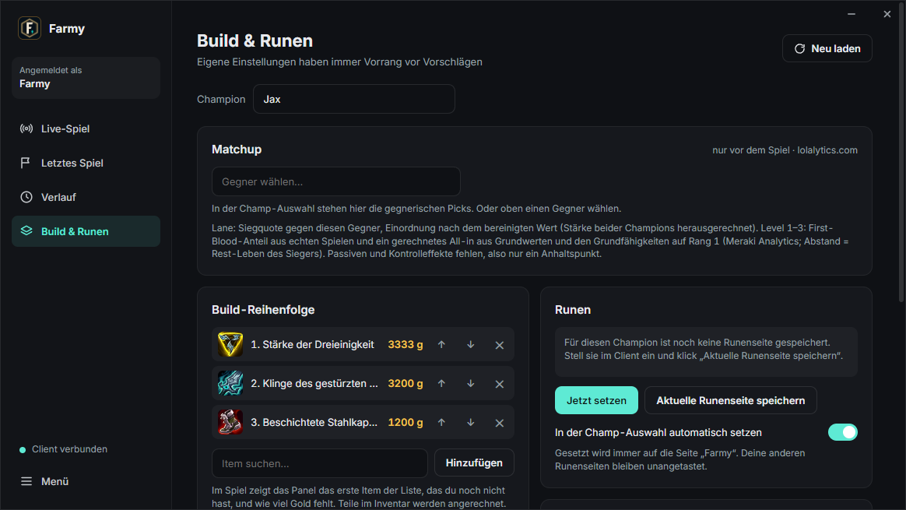

Alles, was im Kampf zählt. Nichts, was den Bildschirm zudeckt.
Ein schlankes Overlay für League of Legends mit exaktem CS, Summoner-Timern, XP bis zum nächsten Level, Mana für deine ganze Combo und dem Gold, das dir noch zum nächsten Item fehlt – in einem kleinen Panel neben deinem HUD. Komplett auf Deutsch.

Gemacht für die Momente, in denen Spiele verloren gehen
Jeder Wert ist etwas, das du als Spieler ohnehin sehen könntest – nur genau dann zur Hand, wenn du es brauchst.
Mana für deine Combo
Kosten von Q+W+E+R auf deinen aktuellen Rängen, mit Warnung, bevor du ohne Mana ins All-in gehst.
Gold bis zum nächsten Item
Folgt deinem Build und sagt dir, sobald du dir das nächste Item leisten kannst.
Summoner-Timer
Blitz und Co. mit Countdown, aus dem HUD gelesen und alle 10 Sekunden abgeglichen. Item-Cooldowns wie Zhonyas gleich mit.
Exakter CS-Zähler
Direkt aus dem HUD statt Riots auf Zehner gerundetem Wert, dazu CS/min und XP in Vasallen.
Itemwert gegen deine Lane
Wer bei den Items vorne liegt – je Spieler im Tab-Scoreboard und fürs ganze Team.
Matchup und Runen automatisch
Siegquote gegen jeden gegnerischen Pick in der Champ-Auswahl, wer das frühe All-in gewinnt, und Runen auf einer eigenen Seite.
Stats-Fenster für vor und nach dem Spiel
Live-Spiel mit allen zehn Spielern und ihren Rängen, dein Verlauf mit Trends für CS/min, KDA und Vision je Spielmodus, Builds, Runenseiten und Summoner je Champion – mit Vorschlägen von lolalytics.com.


Warum noch ein LoL-Overlay?
Viele Companion-Apps sind groß, laufen über Overwolf und zeigen Werbung. Farmy geht einen anderen Weg.
Klein und ruhig
Ein Panel neben deinem HUD, jedes Modul lässt sich abschalten. Keine Pop-ups mitten im Kampf.
Ohne Werbung und Konto
Eine eigenständige Windows-App. Nichts anzumelden, nichts zu verkaufen, und außer Abrufen öffentlicher Spieldaten verlässt nichts deinen PC.
Open Source
Der komplette Quellcode steht unter MIT-Lizenz auf GitHub – schau nach, was das Programm tut, oder bau es selbst.
Fragen
Die ehrlichen Antworten.
Kann ich dafür gebannt werden?
Farmy liest und verändert nie den Speicher des Spiels, klinkt sich nirgends ein und sendet keine Eingaben. Es nutzt Riots offizielle Live-Client-Schnittstelle, die Schnittstelle des League-Clients, die auch Runen- und Statistik-Tools nutzen, und kleine Bildschirmausschnitte von dem, was du ohnehin siehst. Was Riot nicht erlaubt (gegnerische Cooldown-Timer, Augment-Siegquoten), fehlt bewusst. Riot hat das Programm nicht geprüft, also kann kein Drittanbieter-Tool etwas versprechen – es zeigt aber nur, was du auch selbst sehen oder nachschlagen könntest. Ausführlich (Englisch).
Warum warnt Windows SmartScreen?
Die App ist noch nicht signiert, und neue unsignierte Dateien bekommen eine Reputations-Warnung. Klick auf Weitere Informationen → Trotzdem ausführen. Zu jeder Version steht die SHA-256-Prüfsumme in den Release-Notizen, und der ganze Quellcode liegt auf GitHub.
Kostet das Overlay FPS?
Es liest etwa einmal pro Sekunde ein paar kleine Bildschirmbereiche, wertet sie lokal aus und zeichnet ein einziges schlankes Panel.
Funktioniert es im Vollbild?
Stell League auf Randlos oder Fenster (Einstellungen → Video → Fenstermodus) – über echtem Vollbild kann kein Overlay liegen. Auflösung und HUD-Skalierung werden automatisch erkannt.
Brauche ich Overwolf oder ein Konto?
Nein. Farmy ist eine eigenständige Windows-App ohne Werbung, Konto oder Overwolf.
Probier es im nächsten Spiel
Dir fehlt etwas? Teil deine Idee – auch ganz persönliche Wünsche sind willkommen.